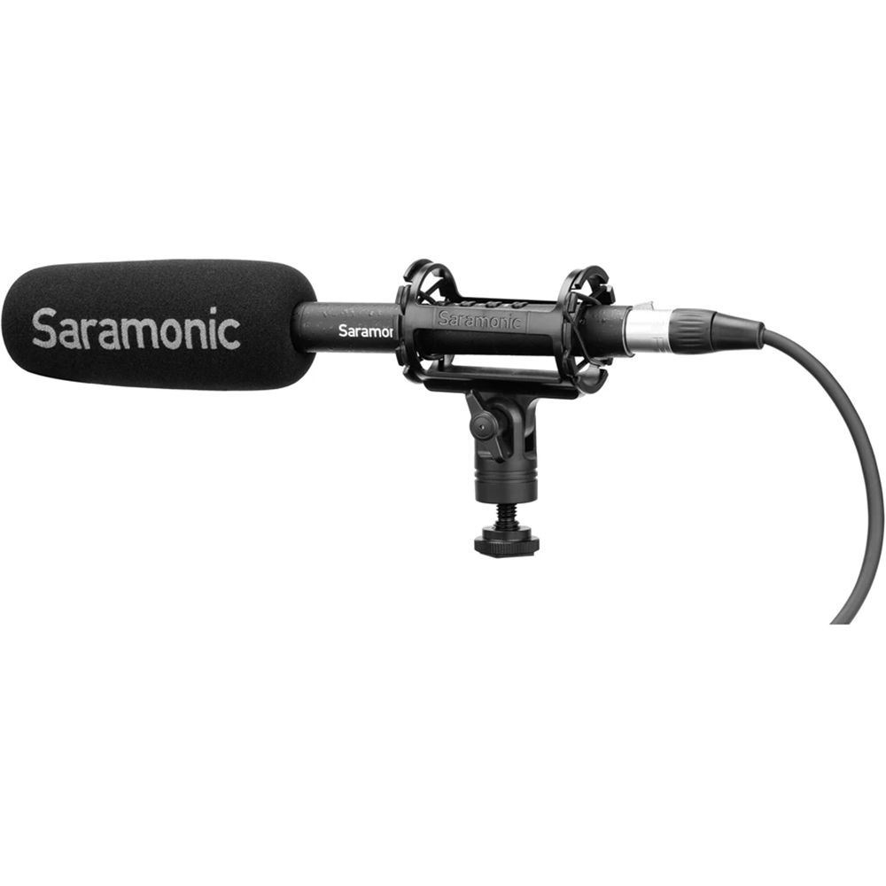
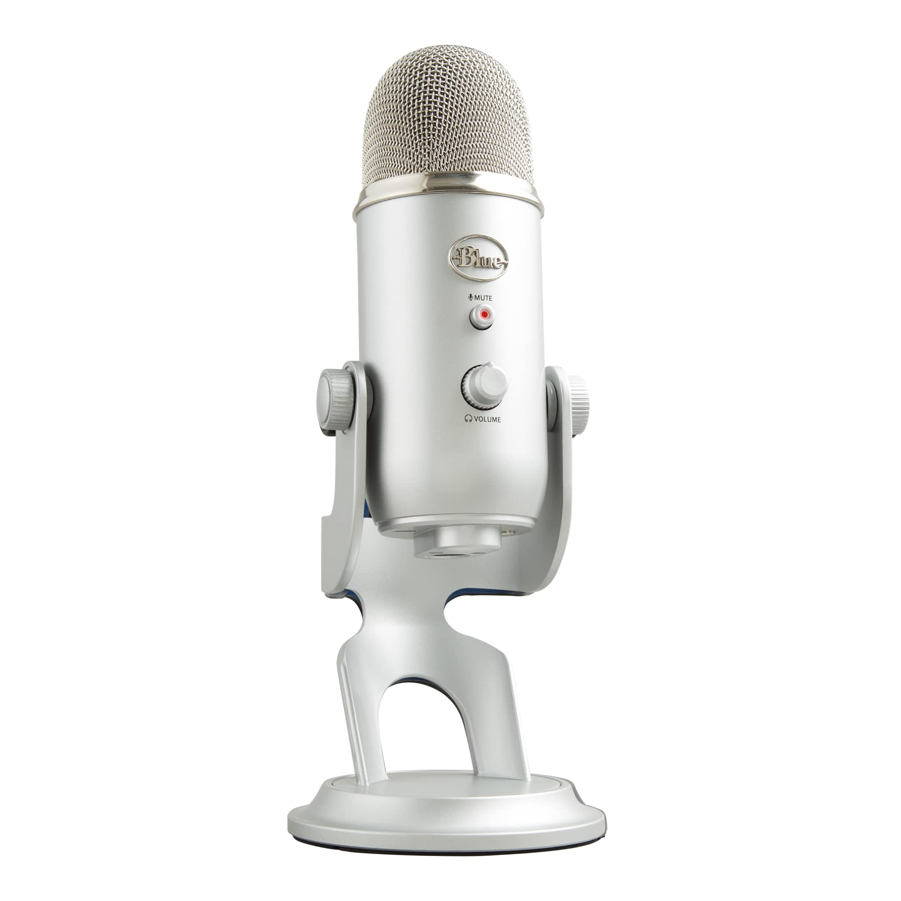
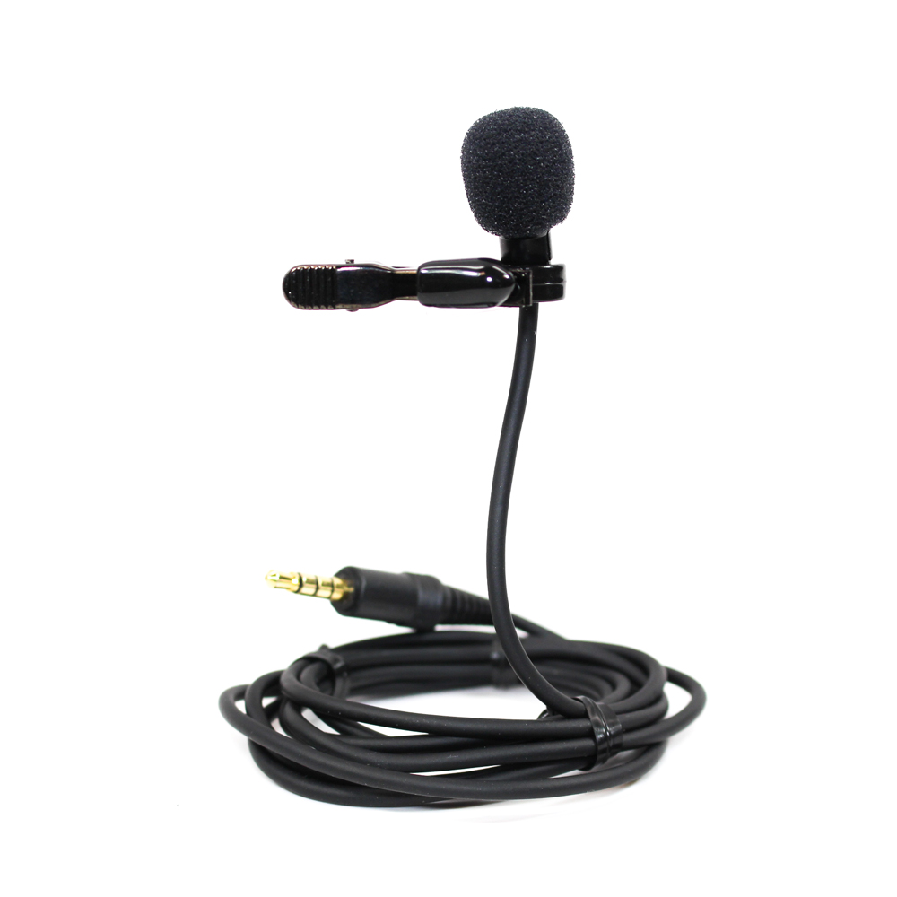

Index
Lesson One - Camera
Lesson Two - Microphone
Lesson Three - Lighting
Test your understanding
Teacher dashboard
Lesson Two: Microphone
Learning Objectives
To explain different types of audio equipment
=================================================================
1. Shotgun microphone

Pros
Ease of use - a one-man operation
Cons
Limited pickup pattern (Only picks up audio from directly in front)
2. USB Microphone

Pros
quite affordable
Cons
a delay between the time the sound enters the mic and the time it exits your headphones.
3. Wired Lavalier Microphone

Pros
long battery power
Cons
When you are walking around, you may find yourself tripped by the cord
===================================================================
Test Your Understanding
Question 1
If you don't want any audio delays, which microphone is not recommended?
Choice 1 - Wired Lavalier Microphone
Choice 2 - USB Microphone
Choice 3 - Shotgun microphone
Choice 4 - Both Shotgun microphone and USB Microphone
Submit